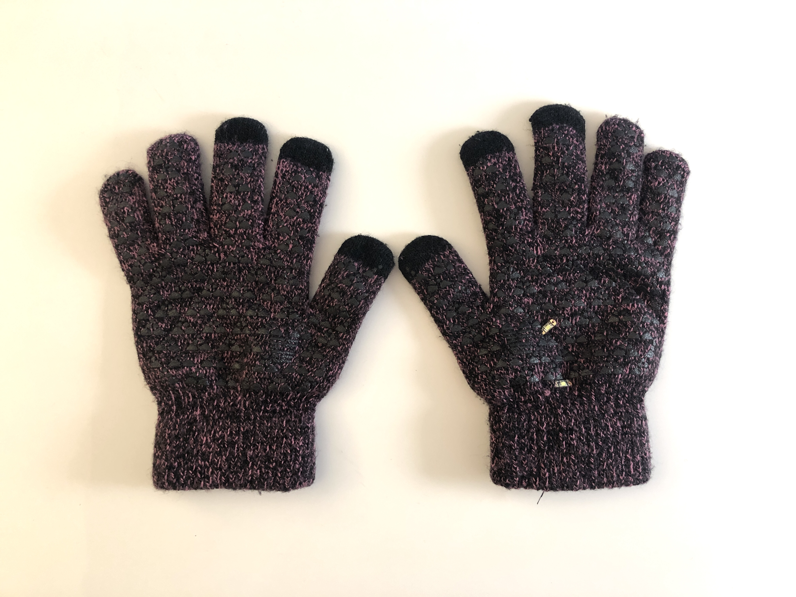

g.loves
April 18, 2022
Description
g.loves is a pair of gloves that light up when holding hands. Intended for two participants, each participant wears a glove and when the palms meet, the gloves illuminate.
My interest in modes of human connection is what motivated this project. I wanted the action of switching the circuit on to be meaningful in that aspect. I considered making masks that illuminated if two participants kissed through their masks. I ultimately settled on hand-holding for this project. To keep this first prototype simple, the interation is holding hands to activate the circuit. However in the future, I'm interested in how these gloves can act as an ambient display for our emotions prior to any human interaction and as a real-time display when we interact with others. Some wearables that I drew inspiration from include the Mi.Mu Gloves and the Wearable Aura.
Circuit
The first prototype of this LED wearable utilizes 2 LED sequins, conductive thread, conductive tape, and a coin cell battery. I created a pocket to hold the coin cell battery, which is located on the right-hand glove at the wrist. The switch to turn the circuit on/off is at the palms of each glove. The conductive tape on the left-hand glove connects the two strips of conductive tape on the right-hand glove, completing the circuit.
Right-hand glove (RHG) and left-hand glove (LHG). LHG is one strip of conductive tape.
g.loves. RHG has 2 LED sequins connected in parallel.
g.loves. Conductive tape is used to create a switch.
Future Iterations
In the future, I'd like to:
- make the gloves myself (for this first prototype, I used what I already had as a canvas)
- apply LEDs on both gloves (ran out of conductive thread the night I made the first prototype and couldn't
sew LEDs onto the other glove)
- use conductive fabric as the switch instead of conductive tape
- consider the use of a microcontroller to animate the lights
References
-
Mi.Mu Gloves
-
Wearable Aura
-
Coin Cell Battery Holder Tutorial
-
Coin Cell Battery Pack Tutorial
Specifications
gloves, LED sequins, conductive thread, conductive tape, thread, coin cell battery